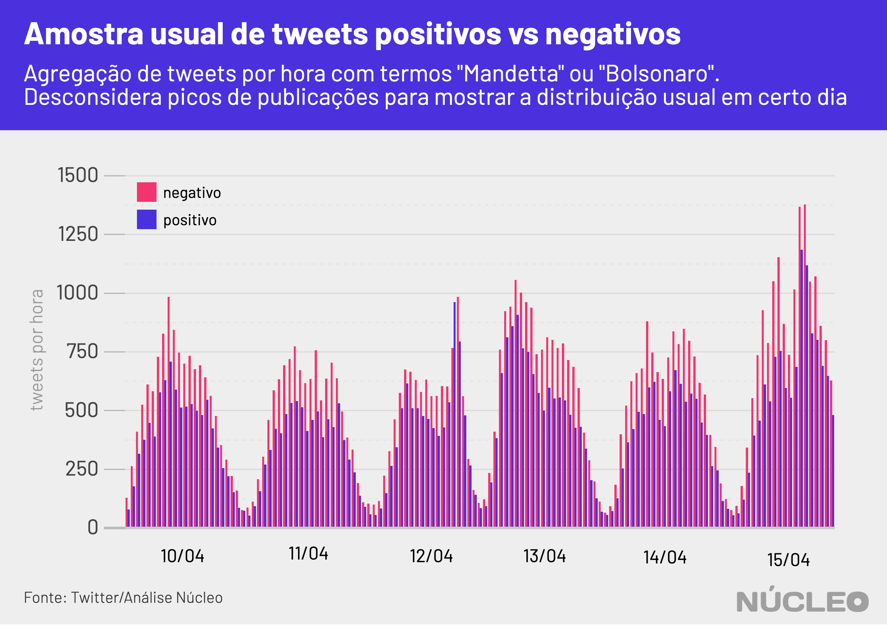
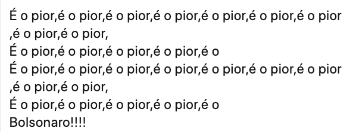

O anúncio da demissão do ministro Luiz Henrique Mandetta do Ministério da Saúde gerou um pico de reações de carga negativa no Twitter, indicando potencial contrariedade com o afastamento forçado do ministro pelo presidente Jair Bolsonaro, em meio à pandemia de coronavírus.
Análise do Núcleo com mais de 300 mil tweets mostra que logo após publicação de Mandetta anunciando sua saída do governo há um pico de tweets negativos muito superior a positivos, continuando assim por algumas horas.

É importante porque…
-
O Twitter sempre foi importante para a comunicação de Bolsonaro, inclusive em busca de apoio. Perder a conversa lá significa enfraquecimento dele em um de seus principais canais
-
Boa parte das autoridades se comunica com suas bases pelo Twitter, que se tornou um termômetro de discussão política e de assuntos do momento no país, pautando autoridades, imprensa e o debate em geral
É importante salientar que a carga (positiva ou negativa) de um tweet não dita necessariamente a disposição de um tuiteiro em relação à demissão de Mandetta (contra ou a favor), mas sim traz pesos e sentimentos ao centro do debate.
Sentimentos negativos indicam que o debate tende a ser carregado de adjetivos e críticas pesadas, ao passo que os positivos refletem frequentemente um tom mais ameno e elogioso (seja a Bolsonaro ou a Mandetta, por exemplo), mas também pode representar ironias (alguém usando termos afáveis para ironizar uma posição desfavorável, por exemplo).
Publicações com carga negativa são usuais no Twitter, à medida que a rede social é reconhecidamente um lugar de crítica política e campo de batalha ideológico entre esquerda e direita, mas o que chama a atenção nesse caso é a diferença em que essa distribuição acontece logo após o tweet de Mandetta e nos momentos seguintes.
Como é possível ver no gráfico demonstrativo abaixo, em uma distribuição de tweets sem picos é possível observar que publicações com carga negativa são em geral predominantes sobre tweets positivos, mas com uma margem não muito grande.

Gráfico demonstrativo
Mas se acrescentarmos os picos à série histórica, vemos por exemplo que a entrevista de Mandetta ao programa Fantástico, da Rede Globo, no dia 12 de abril gerou um pico de tweets com carga positiva, ao passo que o anúncio de sua demissão foi predominantemente negativo.
Com esse spread entre tweets negativos e positivos colocados em comparação (entrevista e anúncio) é possível notar o tom do debate na rede social e presumir que houve uma recepção majoritariamente negativa à demissão do ministro.

As divergências entre Bolsonaro e Mandetta estavam evidentes há dias, principalmente pela predominância que o ex-ministro vinha ganhando no combate ao coronavírus, mas também pela discordância do presidente em relação à posição de Mandetta nos esforços para conter o avanço do vírus.
Bolsonaro defende medidas mais amenas de movimentação de pessoas, a fim de evitar um colapso na economia, ao passo que Mandetta, com respaldo da comunidade científica e da Organização Mundial da Saúde (OMS) defende isolamento social mais intenso, com menor circulação de pessoas na ruas. Segundo pesquisa do Datafolha, cerca de dois terços dos brasileiros reprovaram a demissão de Mandetta.
TIPOS DE TWEETS
Os autores dos tweets foram mantidos anônimos
- Positivo em geral

- Negativo em geral

- Positividade irônica

Na imprensa
-
Mandetta foi de ‘grande exemplo’ a ‘traidor’ para a direita no Twitter ⋅ Folha de S.Paulo ⋅ (16/04/2020)
-
Mandetta é demitido do Ministério da Saúde após um mês de conflito com Bolsonaro: relembre os principais choques ⋅ BBC Brasil ⋅ (16/04/2020)
-
Bolsonaro se isola com direita em rede social após pronunciamento, e centro e esquerda se unem de novo ⋅ Folha de S.Paulo ⋅ (26/03/2020)
-
Em embate com Bolsonaro, Mandetta dispara em popularidade digital e supera Lula e Huck ⋅ Folha de S.Paulo ⋅ (09/04/2020)
METODOLOGIA
O Núcleo capturou cerca de 700 mil tweets com os termos “Mandetta” ou “Bolsonaro” entre dias 11 e 17 de abril, utilizando a API gratuita do Twitter. O código para extração pode ser encontrado aqui.
O vocabulário dos tuítes foi comparado com dois léxicos da biblioteca lexiconPT, que relaciona diferentes palavras do português com valores de sentimentos positivos ou negativos atribuídos a elas. O algoritmo foi capaz de detectar a carga de sentimento de 310 mil tweets.
Com a finalidade de manter a privacidade de usuários com perfis pouco notórios, o Núcleo não vai divulgar os dados brutos – cada pessoa pode rodar o código de extração para obter esses resultados.
A conta considera apenas tuítes únicos, ou seja, exclui retuítes e respostas a tuítes. Isso porque queremos medir a espontaneidade de publicações sobre o tema.